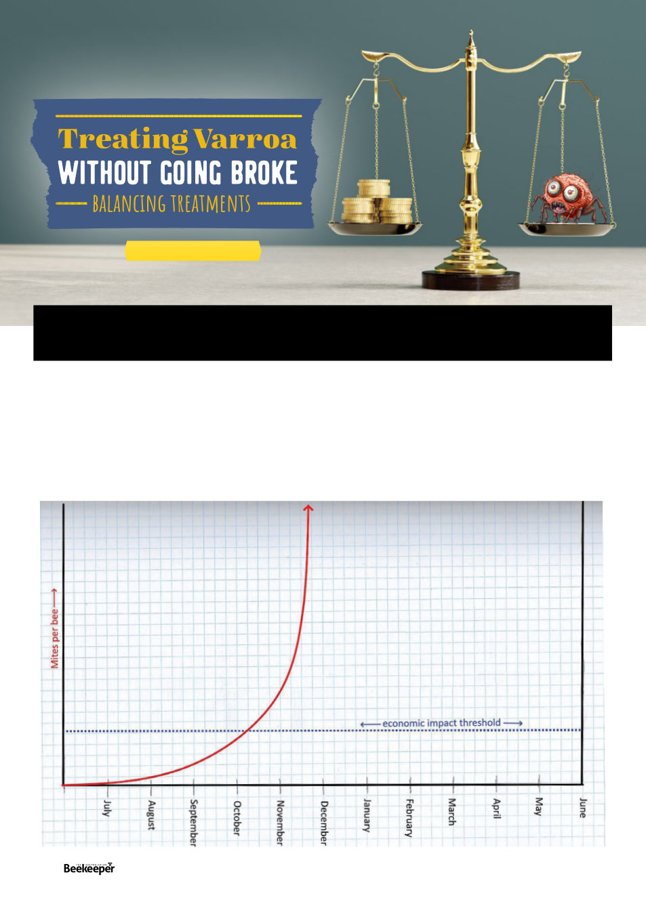

We’ve had a lot of articles about specific aspects of
management, but I wanted to start from the beginning
and go through the process step by step in the way I think
makes it most easy to understand.
Well the beginning beginning would be an overview of
what Varroa is, but I feel like that’s been covered enough
and I value your time, so we’ll skip to the next thing,
monitoring mites levels and planning when to treat. We’ll
go into more specifics later, but first, in general, when
and why?
You have bees. And there’s this Varroa mite thing. Obviously. It’ll cause
your hives to fail unless you manage it, but there’s seemingly so much to
know about managing it, where to start?
ARTICLE BY KRIS FRICKE
Okay so the first thing we need to understand is that the
mite population doesn’t just slowly rise, it rises exponentially,
ie if you were to graph it over time it would be a curve
that continues to steadily increase ever more steeply over
time. Here is a graph I hand drew (and then finished on
the computer) because making a graph with a specific
curve in excel is not among my talents, but the curve is my
best attempt at accurately reflecting actual graphs of mite
population growth (of which you’ll find some later in this
article so be patient if thats what you want to see)
24 |
Celebrating 125 years | Vol. 126 | No. 02